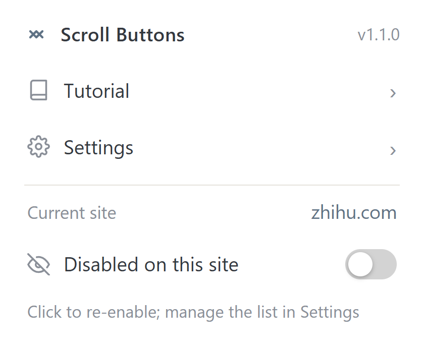
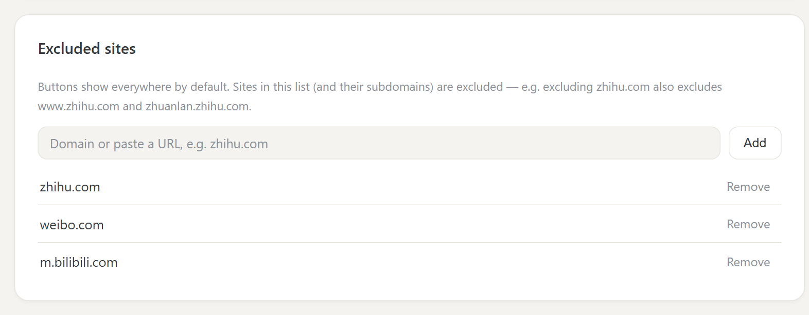

Settings entry + a switch for the current site, right where you need them
Applies instantly, no refresh needed; flip it back anytime
Paste a full URL and the domain is recognized automatically (subdomains included)

